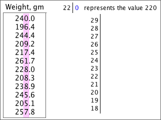

Basic stem and leaf plot
Drawing a stem and leaf plot is a useful practical skill — it is a quick graphical display of the distribution of values in a data set when there is no access to a computer.
To draw a stem and leaf plot, a decision must be made about which digits should be used as stems and leaves. In the following exercise, that choice has already been made. (The leaf digits are drawn with a pink background.)
To complete the stem and leaf plot, click on each value to display its leaf digit on the right, then drag the leaf onto the correct stem. The leaves should be sorted in order to complete the stem and leaf plot.
If you have any problems, repeat with a few different data sets.
A consumer group weighed 12 apples in a supermarket and their weights are shown on the left below. Complete the stem and leaf plot on the right.
